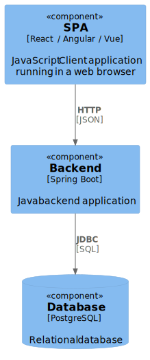

Remix eine Alternative für Geschäftsanwendungen In diesem Blog will ich dir Remix als eine Alternative zur Entwicklung von Geschäftsanwendungen vorstellen. Vor 10-15 Jahren noch war es üblich Geschäftsanwendungen mittels Server-seitigem Rendering zu entwickeln. Das war die Zeit der klassischen Frameworks, wie PHP, Ruby on Rails, ASP.NET oder Java Server Faces. Die Anwendungen wurden auf dem Server gerendert und als HTML an den Browser ausgeliefert. Allerdings scheuten viele Entwickler die Komplexität von JavaScript und die damit verbundenen Probleme. Die Browser waren damals noch nicht so standardisiert und performant wie heute. Wobei man auch heute noch streiten kann, ob die Browser wirklich standardisiert sind. Aber damals war es noch schlimmer. Allerdings hatten diese Anwendungen gegenüber klassischen Desktop Anwendungen, die sie ablösen sollten, einen entscheidenden Nachteil. Sie waren nicht so responsiv und interaktiv, wie klassische Desktop Anwendungen. Das lag daran, dass die Anwendungen immer wieder den Server kontaktieren mussten, um Daten zu laden oder zu speichern. Mit der Einführung von AJAX und später Single Page Applications (SPA) hat sich das geändert. Die Anwendungen wurden interaktiver und responsiver. Die Welt drehte sich komplett in Richtung Single Page Applications. Die Kommunikation mit dem Server erfolgte über HTTP APIs, die Daten im JSON Format austauschten. Die Anwendungen wurden im Browser gerendert und die Daten über APIs geladen. Dies führte zu einem Push des REST Paradigmas.  Figure 1. Klassische SPA Architektur Und aus meiner Sicht führte das zu ein paar Problemen, die erstmal nicht so offensichtlich waren, da alle auf den Zug aufgesprungen sind und es so gemacht haben. Es waren auch alle damit beschäftigt, erst einmal die neuen Technologien zu lernen und zu verstehen. Es kamen immer mehr SPA Frameworks auf: Angular 1, Angular, React, Vue.js, Svelte, Preact, ember, um nur ein paar zu nennen. Außerdem kam neben JavaScript auch TypeScript auf, das die Sprache JavaScript um Typen erweiterte. Und das Tooling drumherum war massiv in Bewegung: Webpack, Rollup, Babel, ESLint, Prettier, Jest, Cypress, Storybook, um nur ein paar zu nennen. Bevor wir uns dem Problem der Netzwerkkommunikation zuwenden, noch einen kleinen Blick in die einzelnen Komponentn .Whitebox SPA Hier sieht man, was häufig passiert, wenn man Daten aus der Datenbank ins UI laden will. Definition von JPA Entites und Mapping zwischen SQL und Java Objekten Mapping zwischen Java Objekten und JSON Wir haben hier unter Umständen zwei Mappings drin, die wir pflegen müssen. Das ist nicht nur fehleranfällig, sondern auch zeitaufwändig. Für bestimmte Use Cases helfen hier Ansätze, wie Spring Data REST weiter, welche zum Teil das Mapping automatisieren, zumindest Richtung REST. Dies führt dann wieder zu einem Code First Ansatz für REST Schnittstellen. Dies kann in Ordnung sein, wenn es sich um "private" Schnittstellen handelt. Leider ist die Trennung zwischen "privaten (BFF)" und öffentlichen Business API Schnittstellen nicht immer so klar. Dies führt schnell dazu, dass wir eine "Business API" vorsehen, aber bei einer spezifischen BFF Schnittstelle landen, die eigentlich privat sein sollte. Ferner sehen wir, dass wir Validierungslogik häufig doppelt implementieren. Hier können generierende Ansätze helfen, die aus Java Klassen (Annotationen) entsprechende zod Schemata generieren. Mein Kollege ist darauf in seinem Post Validieren mit Zod: zwischen Frontend und Backend eingegangen. Aber so langsam wurden auch einige Probleme sichtbar bei der Benutzung von REST. Es ist nicht so einfach bei einem REST Architekturstil die Daten so zu laden, wie das Frontend sie für einen bestimmten Use Case benötigt. Es gibt Overfetching und Underfetching, also es werden zu viele oder zu wenige Daten vom Backend geladen. Das Overfetching hat zur Folge, dass die Latenzzeit und gerade auch im mobilen Bereich die Datenmenge, die übertragen werden muss, steigt. Underfetching hat zur Folge, dass mehrere Requests gemacht werden müssen, um die Daten zu laden, die für einen Use Case benötigt werden. Dies erhöht die Latenzzeit und die Komplexität der Anwendung. Gleichzeitig muss das Frontend wissen, welche Endpunkte es ansprechen muss, um die Daten zu laden. Mit der Einführung von Microservices, ist dies häufig nicht mehr so einfach, da die Daten auf verschiedene Services verteilt sind. Um das Problem zu lösen, gibt es verschiedene Lösungen. Zum einen wurde je Frontend ein spezielles Backend entwickelt, welches die Daten so liefert, wie das Frontend sie benötigt. Diese Lösung ist als "Backend for Frontend" bekannt. Eine andere Lösung ist die Einführung von GraphQL oder Falcor. Diese Technologien erlauben es dem Frontend, die Daten zu laden, die es benötigt. Hier hat sich klar GraphQL durchgesetzt. Der GraphQL Server fungiert dabei häufig als Gateway zu den Microservices. Das Frontend braucht nur noch den GraphQL Server ansprechen und bekommt die Daten, die es benötigt. Wer ein Frontend auf mehrere Backend Microservices aufsetzen muss, ist immer noch mit dieser Technologie oder anderen Technologien, die das gleiche Problem lösen, gut beraten, wie etwa tRPC. Allerdings wird diese Komplexität für viele Geschäftsanwendungen mit einer überschaubaren Nutzerbasis gar nicht benötigt. Man würde gerne die Vorteile von Single Page Applications nutzen, aber nicht die Komplexität, die damit einhergeht. Die Entwicklung solcher Anwendungen scheint damit zu teuer und zu komplex zu werden. Vielleicht ist dies auch eine der Motivatoren für den Trend zu No-Code und Low-Code Plattformen. Sie versprechen die Entwicklung solcher Anwendungen drastisch zu vereinfachen zu beschleunigen. Aus meiner Sicht aber geht das auf Kosten der Flexibilität und der Kontrolle über die Anwendungen. Es kommt zu einem starken Vendor Lock in. Irgendwie erinnert mich das an die 90er Jahre und das Aufkommen von 4GL Sprachen. Der Wechsel zu einer anderen Technologie kann schwierig und kostspielig werden. Low-Code Plattformen sind sehr "opinionated" in der Art und Weise, wie Software entwickelt wird. Sie bieten vorgefertigte Bausteine und Prozesse, welche die Entwicklung beschleunigen können, bei spezifischen Anforderungen aber an Grenzen stoßen können. Häufig sind sie aus meiner Sicht ebenfalls ein Rückschritt in der Softwareentwicklung. Wenige unterstützen sauberes Unit Testing und die Integration in CI/CD Pipelines. Ebenfalls stellen wir immer wieder fest, dass die Entwicklungskosten gesenkt werden, aber die Gesamtkosten aufgrund von Lizenzkosten und Abo-Gebühren steigen. Gerade, wenn dann die Nutzeranzahl steigt, kann es schnell teuer werden. Aufgrund der hohen Abhängigkeit von den Plattformen, kann es auch schwierig werden, die Anwendung zu skalieren oder zu migrieren. Gleichzeitig benötigt man für die Entwicklung dieser Anwendungen auch noch Entwickler, die sich mit der Plattform auskennen. Die Plattformen sind also nicht so einfach zu bedienen, wie es auf den ersten Blick scheint. Wenn aber an den Verkaufsargumenten für Low Code Plattformen etwas dran ist: Entwicklungsgeschwindigkeit und Entwicklungskosten zu senken, wir aber gleichzeitig keine Kompromisse bei Standard-Technologien und einem relativ un-opinionated Ansatz machen wollen, was gibt es für Alternativen? Hier kommt Remix ins Spiel. Remix ist ein sogenanntes Fullstack Framework, welches auf React und React-Router aufsetzt. Next.js ist der Platzhirsch im React Umfeld, aber auch für die anderen SPA Frameworks gibt es Fullstack Frameworks, wie Nuxt.js für Vue.js oder SvelteKit für Svelte. Nur für Angular ist das Angebot dünn. Es gibt mit Analog ein Fullstack Framework, welches auf Angular aufsetzt, aber es ist noch nicht so ausgereift wie die anderen Frameworks. Viele der Fullstack Frameworks motivieren sich über den Aspekt der Search-Engine-Optimierung (SEO). Da HTML Seiten auf dem Server gerendert werden, sind diese Anwendungen für Suchmaschinen unter Umständen besser geeignet. Dies ist sicherlich wichtig für Anwendungen, die öffentlich zugänglich sind und von Suchmaschinen indexiert werden sollen. Für interne Anwendungen ist der SEO Aspekt weniger interessant. Der generelle Aufbau sieht wie folgt aus Figure 2. Whitebox Remix Im Gegensatz zum ersten Ansatz mit dem Ökosystem-Bruch (JavScript / Java), haben wir hier einen durchgängigen Ansatz. Wir brauchen keine unnötigen Mappings definieren, da wir direkt JSON aus der Datenbank bekommen. Außerdem definieren wir einmal die Validierungslogik für die Daten und können diese sowohl im Frontend als auch im Backend nutzen. Remix sorgt als Aufsatz auf "React Router" dafür, dass folgende vier Dinge bereitgestellt werden: ein Compiler ein HTTP Handler (Runtime Server Adapter) ein Server Framework ein Browser Framework Eine detaillerte Beschreibung findet sich in der Remix Dokumentation. Einer der wesentlichen Unterschiede zu der Entwicklung mit einer REST API, wie Spring MVC ist, dass Remix UI zentrisch ist. Während bei der Implementierung einer REST API man einen Controller implementiert, der mehrere URLS für ein einzelnes Modell bereitstellt, ist bei Remix immer eine Datei für Laden, Manipulation und Layout zuständig. Dabei kann eine Route auf ein Segment einer URL mappen. Remix aggregiert die Daten und Komponenten, um dann die komplette UI auszuliefern. Mit diesem Ansatz erfüllt einige der Anforderungen, die wir an eine Geschäftsanwendung haben: Serverseitiger Zugriff auf Datenbanken Authentifizierung und Autorisierung Testbarkeit Integration von Front- und Backend, ohne dass wir uns um die Details kümmern müssen Einiges davon wird schon durch das Node.js Ökosystem abgedeckt. Aber gerade der letzte Punkt ist die Domäne der Fullstack Frameworks. Dies wird als Hydration und Dehydration bezeichnet. Für Geschäftsanwendungen ebenfalls häufig wichtig sind aus meiner Sicht zwei Dinge: Mächtige Tabellen Formulare und Validierung Dies wird nicht von Remix bereitgestellt. Für Tabellen setzen wir auf Mantine-React-Tables bzw. Material-React-Tables. Diese Komponenten setzen wiederum auf der (headless) Tanstack Table auf. Neben der (kommerziellen) ag-grid Komponente ist das sicherlich eine der mächtigsten Tabellenkomponenten im React Umfeld. Für Formulare und Validierung setzen wir auf remix-hook-form, eine kleine Erweiterung von react-hook-form. Stellt sich aber immer noch die Frage, warum wir Remix statt Next.js einsetzen. Letzteres ist doch der Platzhirsch im React Umfeld. Bei prisimic gibt es einen Blogpost, der die beiden Frameworks vergleicht. Ausschlaggebend war für uns: Setzt auf React Router auf (d.h. wir können Wissen wiederverwenden, etwa auch für klassische React Projekte) Nutzung an Web Standards (Flexiblität für unterschiedliche Einsatzszenarien) Keine ("unnötigen") Extra-Features Insgesamt bietet Remix genau das, was wir brauchen, um eine Fullstack React Anwendung zu bauen ohne weiteren Overhead. D.h. die Lernkurve ist relativ flach und man ist schnell produktiv. Zum Punkt "unnötigte" Extra Features. Das ist natürlich immer eine Frage des Standpunkts. Aber einiges, was Next.JS anbietet, wie Static Site Generate oder Incremental Static Regeneration ist für Geschäftsanwendungen weniger wichtig, denn es ist eher fragwürdig Daten zu cachen, die ein Nutzer ändern kann. HTTP caching ist für öffentliche Daten, welche durch Back-Office Prozesse aktualisiert werden. Da sind wir ganz bei Ryan Florence Standpunkt, einem der Köpfe hinter Remix. Hier empfehle ich CDN Caching, SSG, and SSR von ihm. Und was er erzählt ist nicht nur relevant für CDN Caching, sondern für jede Art von Reverse Proxy vor dem eigentlichen Server, d.h. auch wenn wir etwa einen Caddy Server oder einen Nginx Server vor unserem Node.js Server haben. Das wäre es für diesen Post. In den folgenden Posts schauen wir uns an, wie sich Remix anfühlt.